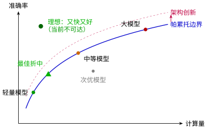
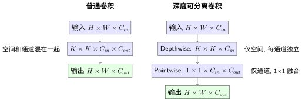
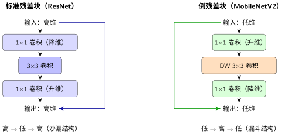
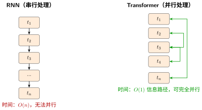
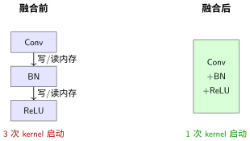

操控效率：效果、速度与硬件的三角权衡#
操控注意力与长程依赖：信息该走哪条路 教会了我们信息该往哪走。但信息走哪条路只是问题的一半——每条路能承载多少车流同样重要。本节我们从四个维度拆解效率瓶颈：参数量、计算量、控制流、硬件利用。
关键问题：同样的准确率，为什么一个模型比另一个慢 10 倍？参数量小就一定快吗？
帕累托边界：效果的物理上限#
在讨论效率优化之前，需要先理解一个基本概念：没有免费的午餐。
对于给定的计算预算，存在一个帕累托边界（Pareto Frontier）——在这个边界上，任何效果的提升都必须以效率为代价，任何效率的提升都必须以效果为代价。

帕累托最优的意思是：如果一个模型在帕累托边界上，你没法让它在不牺牲效果的前提下变得更快，也没法在不牺牲效率的前提下让它更好。
而架构改造的意义就是推动帕累托边界向外移动——不是在同一曲线上往返，而是在相同计算量下达到更好效果，或在相同效果下减少更多计算量。
这解释了为什么 Inception、ResNet、MobileNet 被认为是里程碑级别的贡献：它们不只是在已有曲线上滑动，而是重新定义了什么算"最优"。
但帕累托边界的横轴"计算量"其实掩盖了很多细节。两个模型 FLOPs 相同，一个可能比另一个慢好几倍——因为效率不仅仅是"算多少"的问题，更是"怎么算"的问题。
效率问题的四个源头#
如果把神经网络比作一条高速公路，效率问题可以归结为四类：
维度 |
问题表现 |
根本原因 |
就像… |
|---|---|---|---|
模型太大，存不下、传不动 |
权重有冗余，很多连接不重要 |
车上装了一堆空箱子 |
|
训练/推理太慢，FLOPs 太高 |
乘法太多，很多可以合并或省略 |
每个路口都停下来称重 |
|
GPU 利用率低，时快时慢 |
Python 循环和分支阻止了并行和编译 |
收费站一次只放一辆车 |
|
算力浪费，功耗高，发热大 |
数据搬运比计算还慢，芯片"吃不饱" |
高速公路限速 120，但每辆车只能开 30 |
这四个维度相互独立又相互交织。接下来我们逐一拆解每个维度的直觉、问题和策略。
维度一：参数量——让模型"瘦身"#
直觉：一个 3×3 卷积的权重数量是 \(K^2 \cdot C_{in} \cdot C_{out}\)。当 \(C_{in}=C_{out}=256\) 时，仅一层就有 \(9 \times 256 \times 256 = 589,824\) 个参数。但 256 个通道之间真的需要全连接吗？通道之间可能存在大量冗余——很多通道捕捉的是几乎相同的信息。
Bottleneck：先压缩，再膨胀#
Bottleneck 的核心思想来自 Inception：多尺度感受野的探索 的 1×1 降维——先压缩再膨胀：
这种"沙漏结构"将最昂贵的 3×3 卷积放在低维空间执行：
方式 |
参数分布 |
主要计算在哪 |
|---|---|---|
直接 3×3 |
256×3×3×256 = 589,824 |
高维空间计算 |
Bottleneck |
256×1×1×64 + 64×3×3×64 + 64×1×1×256 = 69,632 |
3×3 在低维（64）执行 |
减少 88.2% 参数，而 3×3 卷积的执行维度从 256 降到 64。
为什么 Bottleneck 有效：1×1 卷积发现，256 个通道中的有效信息可以用更少的维度（64 维）表示——信息的低维结构保证了压缩不会丢失太多信息。用 互信息 的语言说：\(I(X; Z) \approx I(X; Y)\)，压缩后的特征 \(Z\) 保留了原始特征 \(Y\) 的几乎所有信息。
Pre-activation vs Post-activation#
Bottleneck 的激活函数位置影响信息传递质量。原始的 ResNet Bottleneck 使用 Post-activation（卷积后激活）：
改进的 Pre-activation（激活在卷积前）[HZRS16]：
Pre-activation 的优势：
梯度更畅通：跳跃连接直接传递的是归一化后的特征，没有激活函数的"阻断"
正则化效果更好：每个卷积层前面都有 BN，训练更稳定
理论上更优：恒等映射 \(y = x\) 不需要经过非线性变换
实际效果：在极深网络（1000+层）上，Pre-activation 优势明显；普通深度（50-200层）两者差距不大。
参数量优化小结#
策略 |
原理 |
减少幅度 |
适用场景 |
|---|---|---|---|
Bottleneck |
通道降维（256→64→256） |
~3-4× |
深层，\(C \geq 128\) |
Pre-activation |
让跳跃连接更"纯净" |
间接（提升收敛，非直接减参） |
极深网络（1000+层） |
（除了 Bottleneck，还有其他减少参数量的方法如分组卷积（Group Convolution）——将通道分成若干组，每组独立卷积。它是 DW 卷积的"中间态"，本节将在维度二中一并讨论。）
维度二：计算量——让每一次乘法都有价值#
直觉：参数量小不等于计算量小。一个 \(1 \times 1\) 卷积参数很少，但如果特征图很大（\(1024 \times 1024\)），FLOPs 依然很高。计算量的公式是：
关键观察：空间和通道混在一起计算。能不能分拆？
深度可分离卷积：空间与通道分离#
深度可分离卷积（Depthwise Separable Convolution，MobileNet 核心[HZC+17]）的洞察：把空间和通道分开处理。

两步拆分：
Depthwise：\(K \times K\) 卷积，但每个通道独立处理（不跨通道）——计算量 \(K^2 \cdot C_{in} \cdot H \cdot W\)
Pointwise：\(1 \times 1\) 卷积，只在通道间融合——计算量 \(C_{in} \cdot C_{out} \cdot H \cdot W\)
普通卷积计算量：\(K^2 \cdot C_{in} \cdot C_{out} \cdot H \cdot W\) 分离卷积计算量：\((K^2 \cdot C_{in} + C_{in} \cdot C_{out}) \cdot H \cdot W\)
计算量减少倍数 \(= \dfrac{K^2 \cdot C_{out}}{K^2 + C_{out}}\)
当 \(C_{out} = 256\), \(K=3\) 时，\(\dfrac{9 \times 256}{9 + 256} \approx 8.7\)，约减少 8.7 倍计算量（参数量也减少相同倍数）。
分组卷积：分离度的调节旋钮#
DW 卷积实质上是分组卷积的极端情况——当 groups = C_in = C_out 时，分组卷积退化为 DW 卷积。分组卷积可以看作一个"分离度旋钮"：
分组数 |
行为 |
相当于 |
|---|---|---|
|
标准卷积 |
空间和通道完全耦合 |
|
部分分离 |
空间和通道部分解耦 |
|
DW 卷积 |
空间和通道完全分离 |
# 分组卷积：调节 groups 参数
# groups=1：标准卷积
nn.Conv2d(256, 256, 3, groups=1) # 空间和通道完全耦合
# groups=4：分成 4 组，每组 64 通道
nn.Conv2d(256, 256, 3, groups=4) # 部分解耦
# groups=256：DW 卷积（极端情况）
nn.Conv2d(256, 256, 3, groups=256) # 空间和通道完全分离
分组卷积是"标准卷积"与"DW 卷积"之间的连续谱——group 越大，分离度越高，计算量越低，但信息融合越弱。
MobileNetV2 的倒残差结构#
MobileNetV2 结合了 DW 卷积和 Bottleneck，创造了倒残差结构（Inverted Residual）：

MobileNetV2 倒残差结构对比
关键区别：
特性 |
标准残差块 (ResNet) |
倒残差块 (MobileNetV2) |
|---|---|---|
形状 |
高 → 低 → 高（沙漏） |
低 → 高 → 低（漏斗） |
核心卷积 |
普通 3×3 |
DW 3×3 |
升维/降维 |
先降后升 |
先升后降 |
跳跃连接 |
高维连接 |
低维连接（关键！） |
激活位置 |
升维后激活 |
只在中间高维处激活 |
为什么倒残差更高效？
DW卷积在高维执行更高效：DW卷积计算量与通道数成正比，而标准卷积与通道数的平方成正比。在高维空间（192通道）执行 DW 卷积，比在低维空间（32通道）执行标准卷积更省——DW 节省 32×！
低维跳跃连接节省内存：跳跃连接不需要存储高维特征图，减少显存占用。
Linear Bottleneck（线性瓶颈）：最后的 1×1 降维后不接 ReLU——ReLU 在低维空间会破坏信息（一旦变负就永远为0）。
设计心法：倒残差是"DW 卷积的 Bottleneck 版本"——先升维创造"计算空间"，用 DW 卷积高效处理，再降维回到紧凑表示。
维度一+二的统一心法
Bottleneck、DW 卷积、倒残差本质上是一回事——利用信息冗余来降本，只是切入角度不同：
Bottleneck：利用通道间的冗余（256→64→256），主要降低参数量
DW 卷积：利用空间和通道的可分离性（先空间再通道），主要降低计算量
倒残差：结合两者（低维→高维→低维 + DW），同时降低参数和计算
理解了这个本质，你就能灵活组合这些策略，设计出适合你自己任务的模块。
计算量优化小结#
策略 |
原理 |
减少幅度 |
适用场景 |
|---|---|---|---|
DW 卷积 |
空间通道分离计算 |
~8-10× |
通道数 \(\geq 32\)，移动端 |
分组卷积 |
部分分离（调节 group 数） |
~2-4× |
需要平衡效果和效率 |
倒残差（DW+Bottleneck） |
低维跳连 + DW 在高维执行 |
~8-15× |
移动端，极致效率 |
维度三：控制流——让计算不再"排队等待"#
直觉：前两个维度关心"算多少"。但还有一个隐藏的杀手：计算能不能并行？如果 forward 函数里有 Python 的 for 循环和 if/else 分支，那么即使每个操作很快，整体速度也会被串行依赖拖垮。
关键问题：两个模型 FLOPs 完全相同，一个用 Python for 循环逐时间步计算，一个用全张量运算——前者可能慢 100 倍。为什么？
问题：Python 控制流的三重代价#
在 forward 里写 Python for 循环或 if/else 分支，看似方便，实则付出三重代价：
# ❌ 看似正常，实则低效
class SlowRNN(nn.Module):
def forward(self, x):
# x: (batch, seq_len, hidden)
outputs = []
h = torch.zeros(x.size(0), self.hidden_size)
for t in range(x.size(1)): # ① 串行依赖：第 t 步必须等 t-1 步
xt = x[:, t, :] # ② 每次取一个切片，无法融合
if h.sum() > 0: # ③ 动态分支，阻止图优化
h = torch.tanh(self.w_ih(xt) + self.w_hh(h))
else:
h = torch.tanh(self.w_ih(xt))
outputs.append(h)
return torch.stack(outputs, dim=1) # stack 操作又引入一次内存搬运
三重代价分别是：
代价一：串行依赖（Sequential Dependency）。循环体内的每一轮必须等上一轮结束。GPU 有上千个核心，但 for t in range(seq_len) 强行让这些核心排队——t=0 算完才能算 t=1。当 \(seq\_len=1000\) 时，意味着 999 个时间步在空转等待。
代价二：阻止计算图编译（No Graph Optimization）。PyTorch 是动态图框架，每一步的 Python 控制流都会创建一个新的计算图节点。torch.compile 和 torch.jit.script 尝试将 Python 代码编译为优化的静态图，但 if 和 for 让编译器"看不懂"完整的计算模式，无法做算子融合和内存规划。
代价三：内核启动开销（Kernel Launch Overhead）。每个 PyTorch 操作（如 self.w_ih(xt)）都涉及一次 GPU 内核（kernel）启动。当循环体里有 3 个操作、循环 1000 次时，就是 3000 次内核启动。每次启动的延迟约为 5-10μs——仅仅启动开销就累计了 15-30ms，而实际计算可能只需 5ms。
策略一：向量化——用张量运算代替循环#
最直接的解法：把"逐个处理"变成"整批处理"。
# ✅ 向量化：一次处理整个序列
class FastRNN(nn.Module):
def forward(self, x):
# x: (batch, seq_len, hidden)
batch, seq_len, hidden = x.shape
h = torch.zeros(batch, hidden, device=x.device)
outputs = []
for t in range(seq_len):
h = torch.tanh(x[:, t, :] @ self.w_ih.T + h @ self.w_hh.T)
outputs.append(h)
return torch.stack(outputs, dim=1)
但 RNN 的串行本质无法完全消除——只能缓解。真正从架构层面解决这个问题的是 Transformer。
策略二：从架构层面消除串行——Transformer 为何比 RNN 快#
Transformer：注意力的极致 中介绍的 Transformer[VSP+17]，其核心突破不只是"注意力机制"——更本质的是将串行处理变为并行处理：

维度 |
RNN |
Transformer |
|---|---|---|
处理方式 |
逐个时间步串行 |
所有位置同时处理 |
信息路径 |
\(O(n)\)（第 n 步才能看到第 1 步） |
\(O(1)\)（任意两位置直接相连） |
GPU 利用率 |
低（串行等待+内核启动开销） |
高（大规模矩阵乘法，GPU 最擅长） |
训练速度 |
序列越长越慢 |
序列长度影响较小（\(O(n^2)\) 注意力量化） |
长程依赖 |
梯度消失/爆炸，难以学习 |
直接路径，容易学习 |
Transformer 的效率秘诀：注意力矩阵乘法 \(QK^T\) 的维度是 \((n, d) \times (d, n) \rightarrow (n, n)\)。这是 GPU 最喜欢的操作——大矩阵乘法，充分利用了 GPU 的并行计算能力。相比之下，RNN 的 step-by-step 计算用的是小矩阵乘法（\((1, d) \times (d, d)\) 重复 \(n\) 次），GPU 每个核心都在"摸鱼"。
策略三：编译优化——torch.compile 与静态图#
即使架构层面无法完全消除串行，编译技术也能大幅减少开销。PyTorch 2.0 引入的 torch.compile 通过以下优化提升效率：
算子融合（Operator Fusion）：将
Conv → BN → ReLU融合为一个内核调用，消除中间结果的内存读写内存规划（Memory Planning）：预分配计算所需内存，避免运行时频繁分配/释放
自动混合精度：自动识别哪些操作可以用更低精度执行
# PyTorch 2.0+：一行代码获得 10-50% 加速
model = torch.compile(model, mode="reduce-overhead")
对于包含 Python 控制流的模型，mode="reduce-overhead" 尤其有效——它会缓存编译后的图，避免每次 forward 都重新编译。
torch.compile 的本质
torch.compile 做的事情可以概括为：把动态的 Python 逻辑"拍扁"成静态的计算图。一旦控制流被"拍扁"，编译器就能看到全局计算模式，做全局优化。
但它不能完全"拍扁"动态分支——如果一个 if 的分支取决于输入数据（如 if x.sum() > 0），编译器无法预知走哪条路。这是静态图天生的局限，也是为什么 PyTorch 选择动态图作为默认：灵活性有代价。
控制流优化小结#
策略 |
原理 |
加速幅度 |
适用场景 |
|---|---|---|---|
向量化 |
用张量操作代替 Python 循环 |
~10-100× |
任何有显式循环的 forward |
架构级并行 |
用 Transformer/CNN 代替 RNN |
~10-50×（训练） |
序列建模、长程依赖 |
torch.compile |
动态图 → 静态图编译 |
~10-50% |
PyTorch 2.0+，任何模型 |
维度四：硬件利用——让芯片"吃饱"#
直觉：FLOPs 低 ≠ 速度快。有人把深度学习比作"搬砖"——计算（乘法）是你搬砖的速度，而数据搬运（内存读写）是你往返工地和仓库的时间。如果每次只搬一块砖，那 90% 的时间都花在路上。
这就是内存带宽瓶颈（Memory-Bandwidth Bound）：芯片的计算能力绰绰有余，但数据喂不进来，算力闲置。
问题：为什么"算得少"反而可能更"慢"#
考虑两个极端操作：
操作 |
FLOPs |
内存访问量（Bytes） |
算术强度（FLOPs/Byte） |
|---|---|---|---|
矩阵乘法 \(4096 \times 4096\) |
68.7 GFLOPs |
0.10 GB |
687 |
逐元素加法 \(4096 \times 4096\) |
0.016 GFLOPs |
0.10 GB |
0.16 |
矩阵乘法的算术强度是 687——计算量远大于数据搬运量，受限于计算能力（Compute-Bound）。 逐元素加法的算术强度只有 0.16——数据搬运量远大于计算量，受限于内存带宽（Memory-Bound）。
DW 卷积的尴尬：DW 卷积虽然 FLOPs 低，但算术强度也低——\(3 \times 3\) 的卷积核只做 9 次乘法，却要读取 9 个输入值和 1 个输出值。加上每个通道独立，无法组成大矩阵乘法。这就是为什么 DW 卷积"理论快 8 倍，实际可能只快 2-3 倍"。
策略一：算子融合——减少"往返搬运"#
深度学习中最常见的算子序列是 Conv → BN → ReLU。朴素实现需要三次内核启动和三次内存读写：
# ❌ 三次内核启动，两次中间结果的内存读写
x = self.conv(x) # 写中间结果到内存
x = self.bn(x) # 读中间结果，写中间结果
x = F.relu(x) # 读中间结果，写最终结果
算子融合将这三个操作合并为一次内核调用：

融合后，中间结果不再写回内存——在 GPU 寄存器或共享内存中直接传递。这正是 torch.compile 和推理框架（TensorRT、ONNX Runtime）的核心优化之一。
策略二：内存布局——数据怎么"排列"影响访问效率#
内存布局决定了数据在显存中的物理排列顺序。PyTorch 默认使用 NCHW（batch, channel, height, width），而某些 GPU 操作对 NHWC（batch, height, width, channel）更友好：
布局 |
含义 |
优势 |
劣势 |
|---|---|---|---|
NCHW |
通道维度连续 |
逐通道操作（BN）更高效 |
逐像素操作效率低 |
NHWC |
像素维度连续 |
逐像素操作 + Tensor Core 效率高 |
逐通道操作稍慢 |
# 转换为 channels_last（NHWC）内存布局
x = x.to(memory_format=torch.channels_last)
# 后续卷积自动使用优化后的 NHWC 内核
x = self.conv(x) # cuDNN 自动选择最优实现
对于使用 nn.Conv2d 等标准算子的模型，切换为 channels_last 通常能带来 10-30% 的加速，且代码改动仅为一行。
策略三：混合精度——精度够用就好，不必 32 位#
FP32（32 位浮点）提供了极高的数值精度，但多数深度学习操作并不需要——FP16（16 位）或 BF16（Brain Float 16）的精度已足够。
精度 |
位数 |
速度 |
显存占用 |
适用 GPU |
|---|---|---|---|---|
FP32 |
32 |
1×（基准） |
100% |
所有 |
FP16 + FP32 混合 |
16/32 |
2-3× |
~60% |
V100+（Tensor Core） |
BF16 + FP32 混合 |
16/32 |
2-3× |
~60% |
A100+（Ampere+） |
INT8 量化 |
8 |
3-4×（推理） |
~25% |
T4+（TensorRT） |
混合精度的核心做法：前向和反向传播用 FP16/BF16 计算（快），权重更新用 FP32 累积（稳）。
# PyTorch 混合精度训练的标准写法
from torch.cuda.amp import autocast, GradScaler
scaler = GradScaler()
for data, target in dataloader:
optimizer.zero_grad()
with autocast(): # 前向：自动用 FP16 计算
output = model(data)
loss = criterion(output, target)
scaler.scale(loss).backward() # 反向：scale 防止梯度下溢
scaler.step(optimizer) # 更新：FP32 精度累加
scaler.update()
GradScaler 的作用：FP16 的数值范围远小于 FP32（\(6 \times 10^{-8} \sim 65,504\) vs \(1.4 \times 10^{-45} \sim 3.4 \times 10^{38}\)）。微小梯度在 FP16 下可能变成 0（下溢）。scaler 将 loss 放大若干倍，让梯度也放大，反向传播后再缩小回来——避免下溢的同时保持精度。
工程最佳实践 中有更详细的混合精度实战指南。
硬件利用优化小结#
策略 |
原理 |
加速幅度 |
代码改动 |
|---|---|---|---|
算子融合 |
Conv+BN+ReLU 合并为一次内核调用 |
~20-40% |
|
channels_last |
NHWC 布局适配 Tensor Core |
~10-30% |
1 行： |
混合精度 |
FP16/BF16 计算 + FP32 更新 |
2-3×（训练） |
~5 行包装 |
四个维度的策略全景#
维度 |
最有效策略 |
减少幅度 |
主要代价 |
典型应用 |
|---|---|---|---|---|
Bottleneck（先压缩再膨胀） |
~3-4× |
需要合适 Bottleneck 维度 |
ResNet-50/101/152 |
|
DW 卷积 + 倒残差 |
~8-15× |
可能损失少量精度（<1%） |
MobileNetV2/V3, EfficientNet |
|
向量化 + torch.compile |
~10-100×（循环场景） |
架构可能需重新设计（RNN→Transformer） |
序列建模，长程依赖 |
|
混合精度 + 算子融合 |
2-3× |
需要硬件支持（V100+） |
几乎所有模型 |
失败案例：效率优化的陷阱#
案例一：Bottleneck 压缩率过大#
场景：设计图像分类网络，你将 Bottleneck 的压缩比设为 256→8→256（32 倍压缩）。
结果：
参数量确实大幅减少（约 15×）
但准确率从 75% 暴跌到 45%
为什么失败：
8 维的 Bottleneck 太小，无法承载 1000 类 ImageNet 的分类信息
信息瓶颈过于狭窄，有用的特征在压缩过程中被"挤掉"
从互信息角度：\(I(X; Z)\) 太小，\(Z\) 无法保留足够区分 1000 类的信息
教训：Bottleneck 的维度有下限。对于 C 类分类任务，Bottleneck 维度至少应该是 C 的 2-4 倍。1000 类任务，Bottleneck 不应小于 256 维。
案例二：DW 卷积用于通道数少的层#
场景：网络第一层（3 通道输入，16 通道输出），你用了 DW 卷积+1×1 pointwise，而不是标准 3×3 卷积。
结果：
计算量反而增加了！
准确率下降 2%
为什么失败：
DW 卷积的优势在于"空间和通道分离"
但当输入通道只有 3 时，DW 卷积的"逐通道卷积"几乎等价于标准卷积（反正每个输入通道独立处理）
但 DW 卷积后还要加 1×1 pointwise 来融合通道，多了一步计算
标准卷积在 3→16 时本来就是 3×3×3×16，没有冗余可省
教训：DW 卷积只适用于通道数 \(\geq 32\) 的情况。浅层（通道数少）用标准卷积更高效。
案例三：盲目追求轻量导致无法收敛#
场景：为了部署到嵌入式设备，你将 MobileNetV2 的宽度乘子（width multiplier）设为 0.1（所有通道数变为原来的 10%）。
结果：
模型大小只有 0.5MB，满足部署要求
但训练 loss 根本不下降，模型无法学习
为什么失败：
宽度乘子 0.1 意味着 Bottleneck 维度从 192 降到 19
19 维的特征空间无法表达 CIFAR-10 甚至 MNIST 的特征
模型容量被压缩到连简单任务都无法完成
教训：效率优化有极限。宽度乘子通常不应小于 0.25，否则模型会"饿死"。
案例四：倒残差用错激活函数位置#
场景：实现倒残差块时，你在最后的 1×1 降维后加了 ReLU 激活。
结果：
准确率比标准 MobileNetV2 低 3-5%
特征可视化显示大量神经元"死亡"（恒为 0）
为什么失败：
倒残差的最后降维到低维空间（如 24 通道）
ReLU 在低维空间是"信息杀手"——一旦输出为负，信息永久丢失
MobileNetV2 论文明确建议在最后的 Bottleneck 用线性激活（Linear Bottleneck）
教训：倒残差的最后必须是线性激活。这是 MobileNetV2 的关键设计，不能省略。
案例五：Python 循环里的张量拼接#
场景：为了处理变长序列，你用 Python 循环逐个样本做 padding 和拼接：
# ❌ Python 循环 + 逐个 cat
outputs = []
for x in batch:
h = model(x) # 每个样本单独 forward
outputs.append(h)
result = torch.cat(outputs) # 最后拼接
结果：
训练速度只有预期的 5-10%
GPU 利用率徘徊在 20-30%
为什么失败：
每个样本单独 forward 意味着 \(batch\_size\) 次内核启动（而不是 1 次）
torch.cat又触发一次内存重分配和拷贝GPU 被"碎片化"的小任务填满，无法发挥并行优势
教训：尽量在 batch 维度上统一处理。用 pad_sequence + pack_padded_sequence（或 attention mask）在单次 forward 中处理整个 batch。
案例六：DW 卷积搭配小特征图#
场景：你在 MobileNetV2 的深层（特征图只有 \(7 \times 7\)）大量使用 DW 卷积。
结果：
实际速度只有理论速度的 30%
换成标准卷积后反而更快
为什么失败：
DW 卷积的算术强度极低（见维度四：硬件利用——让芯片"吃饱"）
当特征图很小时，DW 卷积受限于内核启动开销和内存带宽，GPU 的并行能力完全浪费
标准卷积虽然 FLOPs 更高，但能组成大矩阵乘法，硬件利用率高
教训：深层小特征图考虑换回标准卷积。DW 卷积在特征图 \(\geq 14 \times 14\) 时才最有效。
决策树：效率优化策略选择#
核心原则：
效率优化是权衡，不是"免费午餐"——每个维度都有代价
先 profile，再优化——不要猜瓶颈在哪，用数据说话
先确定 baseline 能正常工作，再逐步优化
每次优化后都要验证准确率，别只盯着模型大小和速度
四个维度可以叠加使用，但每次只加一个，测量效果后再加下一个
信息论视角：效率优化为什么可能#
效率优化能成功的根本原因来自信息论：自然数据（图像、文本、语音）的特征具有稀疏性和低维结构。
通道之间不是独立的——256 个通道中，很多通道捕捉的是高度相关的信息。1×1 卷积能发现这种相关性，将 256 维压缩到 64 维，保留的信息量基本相同。
同样，空间和通道的可分离性意味着：空间模式（边缘、纹理）和通道模式（哪种特征）的交互不是任意组合的——把它们分开处理，信息损失很小。
用互信息的语言说：
Bottleneck 做了 \(I(X;Z) \approx I(X;Y)\) 的信息压缩——压缩后信息几乎不变
DW 卷积利用了 \(I_{\text{space}, \text{channel}} \approx I_{\text{space}} + I_{\text{channel}}\) 的近似分离性
混合精度利用了"位数的冗余"——大多数梯度值和权重值不需要 32 位精度来表达
算子融合利用了"计算的局部性"——相邻操作之间的数据不需要写回全局内存
这就是为什么我们能"白嫖"效率——压缩掉的是冗余，保留的是信息。而控制流优化和硬件感知算法更进一步：它们压缩的是时间维度的冗余（消除不必要的等待）和空间局部性的浪费（数据尽量留在高速缓存中）。
下一步#
四个维度全部讲完。现在你有了完整的改造武器库——不只是"减少参数"和"降低计算量"，还包括"消除串行等待"和"让硬件吃饱"。但知道武器和会用武器是两码事——下一节诊断与心法：当模型表现不佳时我们将学习如何诊断具体问题并选择合适的武器。
效率优化的更多方向
本章聚焦于架构级的改造（改变层的设计）和编译/硬件级的优化（代码写法、编译策略、精度选择）。除此之外，效率优化还有两个后训练方向值得了解：
剪枝（Pruning）：训练后删除不重要的连接或通道——已有足够信息，不需要全部保留
量化（Quantization）：用更低精度（如 FP32 → INT8）存储和计算——信息精度有冗余
这两个方向与架构设计是互补的：先用 DW 卷积/Bottleneck 设计高效架构，用 torch.compile 和混合精度优化训练，再通过剪枝和量化进一步压缩。感兴趣可参阅 torch.quantization 和剪枝相关文献。
参考文献
Kaiming He, Xiangyu Zhang, Shaoqing Ren, and Jian Sun. Identity mappings in deep residual networks. In European Conference on Computer Vision, 630–645. Springer, 2016.
Andrew G Howard, Menglong Zhu, Bo Chen, Dmitry Kalenichenko, Weijun Wang, Tobias Weyand, Marco Andreetto, and Hartwig Adam. Mobilenets: efficient convolutional neural networks for mobile vision applications. arXiv preprint arXiv:1704.04861, 2017.
Ashish Vaswani, Noam Shazeer, Niki Parmar, Jakob Uszkoreit, Llion Jones, Aidan N Gomez, Łukasz Kaiser, and Illia Polosukhin. Attention is all you need. In Advances in Neural Information Processing Systems (NeurIPS), volume 30. 2017.
贡献者与修订历史
查看详细修订记录
-
d7c9da72026-05-12 - Heyan Zhu: docs: update sphinx only filter from not pdf to not latex -
a954ca52026-05-11 - Heyan Zhu: docs: revise and restructure documentation, fix formatting, and move env setup and sphinx guide to a separate appendix section -
f1c39fd2026-05-11 - Heyan Zhu: docs: deduplicate index & introduction; fix the latex export problem on index content structures -
f159d562026-05-08 - Heyan Zhu: fix: address complaints from the linter -
4a1cae82026-05-03 - Heyan Zhu: docs(model-architecture): convert decision trees to mermaid diagrams -
15d1b152026-05-03 - Heyan Zhu: docs(model-architecture-design): add new chapter on CNN architecture design methodology